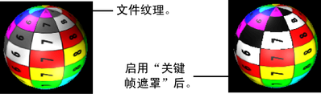
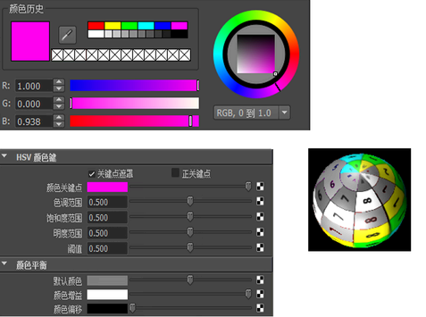

有关“蒙板”(Stencil)工具的描述，请参见蒙板。
将“蒙板”(Stencil)映射到对象
- 在材质的“属性编辑器”(Attribute Editor)中，将“蒙板”(Stencil)工具映射到“颜色”(Color)属性。
- 在“蒙板”(Stencil)的“属性编辑器”(Attribute Editor)中，将 2D 纹理映射到“图像”(Image)属性。
- 将材质指定给对象，并在必要时调整“蒙板”(Stencil)属性。
使用“关键帧遮罩”(Key Masking)属性
- 启用“关键帧遮罩”(Key Masking)。由于“颜色关键帧”(Color Key)属性的默认颜色为黑色和“蒙板”(Stencil)的“默认颜色”(Default Color)，因此 Maya 仅遮罩出包含大部分黑色的区域。

- 在“颜色选择器”(Color Chooser)中更改“颜色关键帧”(Color Key)。在以下示例中，Maya 遮罩了包含红色或粉红色的所有颜色，将其替换为“蒙板”(Stencil)的“颜色平衡”(Color Balance)默认颜色。

注：
当凹凸映射“蒙板”(Stencil)纹理时，必须进行手动的显式连接。凹凸贴图纹理，然后将“bumpValue”手动连接到蒙板“outAlpha”。